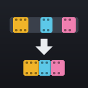

Couper sans perte
Gardez seulement les passages qui comptent et assemblez-les en une seule vidéo. Les images ne sont jamais recompressées : qualité, définition et son restent ceux de l'original.
- Placez la tête de lecture et touchez Début, puis Fin : le morceau s'ajoute.
- Répétez pour chaque passage, réordonnez-les si besoin.
- Touchez Créer la vidéo, puis enregistrez-la dans Photos.
0:00.0/ 0:00.0
0:00
Morceaux
Aucun morceau pour l'instant. Marquez un début puis une fin.